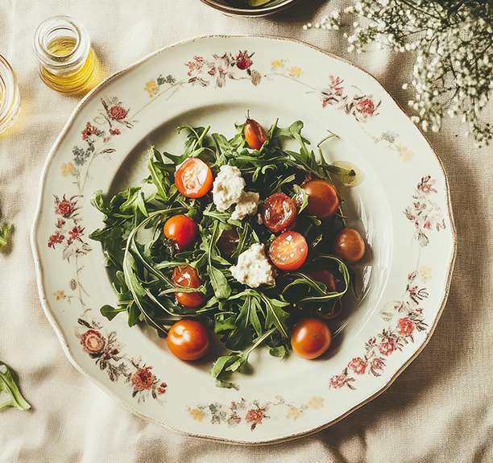
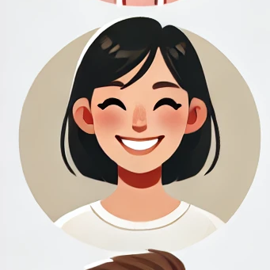

Où la gourmandise rencontre la simplicité des ingrédients naturels. Ici, chaque assiette est
une
célébration des saveurs végétales, mettant en valeur des produits frais, de saison et
soigneusement sélectionnés.

Salade de roquette, tomates et mozzarella fraîche
Témoignages
Clients satisfaits
Élodie R.
Un festin végane inoubliable !
⭐️⭐️⭐️⭐️⭐️
"Noisette & Basilic est une véritable pépite ! Chaque bouchée est un voyage de
saveurs.
Les plats sont non seulement délicieux, mais aussi magnifiquement présentés.
Mention spéciale pour la tarte aux noisettes, un pur régal !"
Mathieu L.
Une expérience culinaire exceptionnelle
⭐️⭐️⭐️⭐️⭐️
"Ce restaurant redéfinit la gastronomie végane. J'ai été impressionné par la créativité
des plats et l’équilibre des saveurs. Le service est impeccable, et l’ambiance
chaleureuse donne envie de revenir encore et encore."

Sophie M.
De la fraîcheur et du goût dans chaque plat !
⭐️⭐️⭐️⭐️⭐️
"Un restaurant qui prouve que la cuisine végane peut être gourmande et raffinée. Les
ingrédients sont frais, les associations de saveurs surprenantes et maîtrisées. Je
recommande à 100% !"
Jules T.
Accueil chaleureux et service impeccable
⭐️⭐️⭐️⭐️⭐️
"Dès notre arrivée, nous avons été accueillis avec le sourire. Le personnel est aux
petits soins et prend le temps de conseiller sur le menu. Les plats sont aussi bons que
beaux. Coup de cœur pour le risotto aux champignons !"
Camille B.
Une explosion de saveurs !
⭐️⭐️⭐️⭐️⭐️
"J’ai adoré l’attention portée aux détails. Chaque assiette est une œuvre d’art, et les
goûts sont parfaitement équilibrés. Le burger végane est à tomber par terre, et les
desserts sont à essayer absolument !"
Lucie D.
Mon restaurant végane préféré !
⭐️⭐️⭐️⭐️⭐️
"Cela fait plusieurs fois que je viens et je ne suis jamais déçue. L’ambiance est cosy,
les plats sont délicieux et le personnel vraiment sympathique. C’est mon adresse coup de
cœur pour une soirée réussie !"
Témoignages
Clients satisfaits
Élodie R.
Un festin végane inoubliable !
⭐️⭐️⭐️⭐️⭐️
"Noisette & Basilic est une véritable pépite ! Chaque bouchée est un voyage de saveurs. Les plats sont non seulement délicieux, mais aussi magnifiquement présentés. Mention spéciale pour la tarte aux noisettes, un pur régal !"
Mathieu L.
Une expérience culinaire exceptionnelle
⭐️⭐️⭐️⭐️⭐️
"Ce restaurant redéfinit la gastronomie végane. J'ai été impressionné par la créativité des plats et l’équilibre des saveurs. Le service est impeccable, et l’ambiance chaleureuse donne envie de revenir encore et encore."
Sophie M.
De la fraîcheur et du goût dans chaque plat !
⭐️⭐️⭐️⭐️⭐️
"Un restaurant qui prouve que la cuisine végane peut être gourmande et raffinée. Les ingrédients sont frais, les associations de saveurs surprenantes et maîtrisées. Je recommande à 100% !"
Jules T.
Accueil chaleureux et service impeccable
⭐️⭐️⭐️⭐️⭐️
"Dès notre arrivée, nous avons été accueillis avec le sourire. Le personnel est aux petits soins et prend le temps de conseiller sur le menu. Les plats sont aussi bons que beaux. Coup de cœur pour le risotto aux champignons !"
Camille B.
Une explosion de saveurs !
⭐️⭐️⭐️⭐️⭐️
"J’ai adoré l’attention portée aux détails. Chaque assiette est une œuvre d’art, et les goûts sont parfaitement équilibrés. Le burger végane est à tomber par terre, et les desserts sont à essayer absolument !"
Lucie D.
Mon restaurant végane préféré !
⭐️⭐️⭐️⭐️⭐️
"Cela fait plusieurs fois que je viens et je ne suis jamais déçue. L’ambiance est cosy, les plats sont délicieux et le personnel vraiment sympathique. C’est mon adresse coup de cœur pour une soirée réussie !"